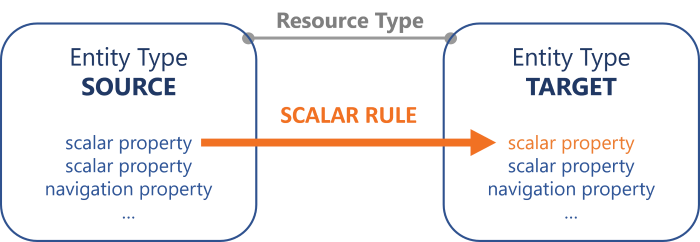
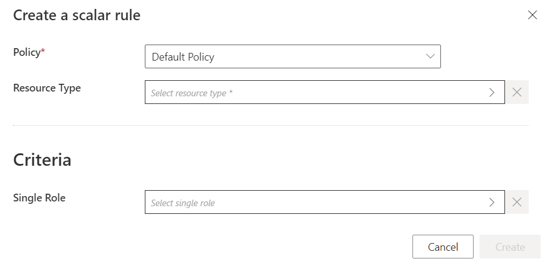
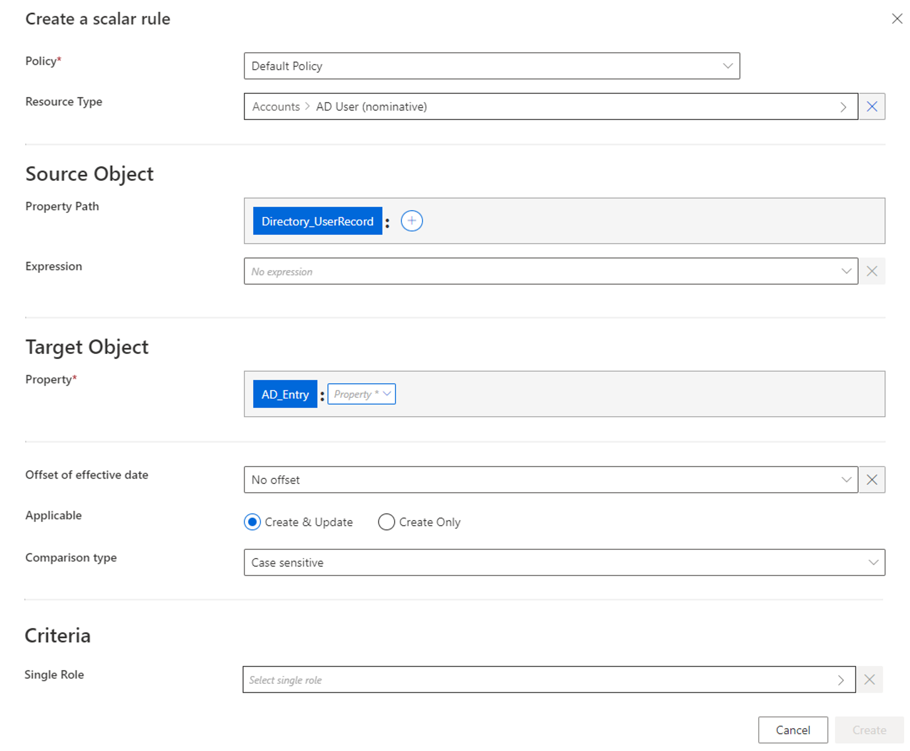
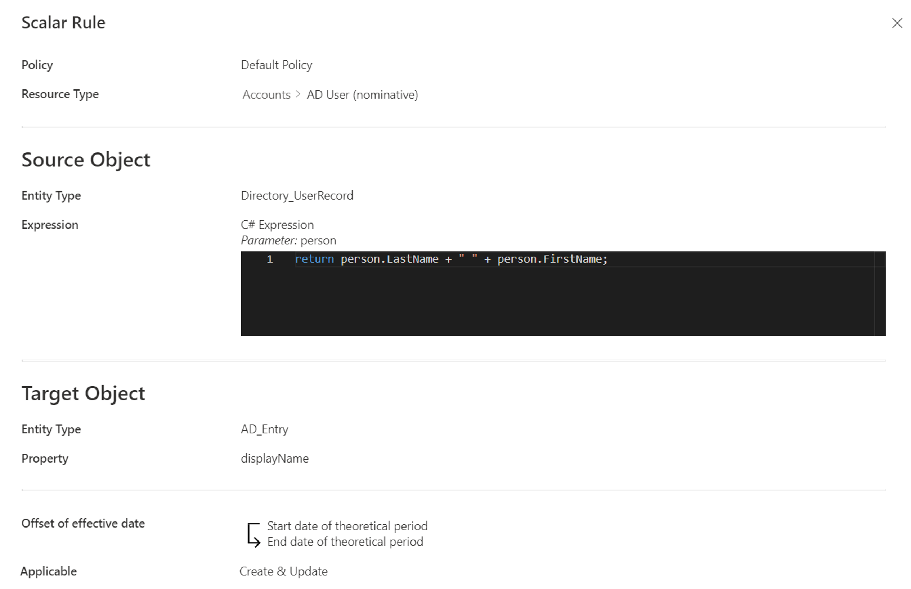
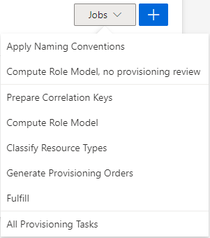

Compute a Scalar Property
How to define scalar rules to compute and provision the values of scalar properties for target resources based on source resources. See the Resource Type topic for additional information.
Overview
Sources are usually identities, and targets are usually accounts from the managed systems.
Here, we are going to compute the values of scalar properties for the target resources used in entitlement management, based on source resources. See the Create an Entity Type topic for additional information. We are going to provision these properties, i.e. write them to the managed system. See the Provisiontopic for additional information.
The right tools for the job are scalar rules.
A scalar property's value can be computed by a scalar rule, based on at least one scalar property from the source entity type, possibly writing a C# expression.

A scalar rule could define the scalar property displayName of nominative AD accounts based on its owner's name with the expression:
return person.LastName + " " + person.FirstName;
The application of a scalar rule can depend on the assignment of a single role. See the Create Roles in the Role Catalog topic for additional information.
Sometimes we create in Identity Manager properties which are not directly linked to any real property in the managed system. A scalar rule on this kind of property will not find a property to provision in the managed system, and thus will not produce any result.
For example, we may need to create in the AD the property isUnused (to spot unused accounts) with a C# expression based on other properties from the same entity type. These properties, such as accountExpires and lastLogonTimestamp, are each linked to a property from the AD, while isUnused is for Identity Manager's use only. This scalar property isUnused does not exist in the AD, thus will never be provisioned to the AD, and thus will not be computed by a scalar rule.
Also some properties, like lastLogonTimestamp in the AD or identifiers from ServiceNow, must be changed only by their application. Identity Manager can/must not change these properties, thus no provisioning rule is appropriate for them.
A scalar rule using a single role as criterion will trigger the creation of a target resource for all impacted source resources (so all users), which are not yet correlated with a resource of this resource type.
Without a criterion, a scalar rule does not create resources, and only computes the scalar properties of existing resources.
Guidelines
Expression code must not contain too much data
Once configured, a rule is a complicated object to modify. Therefore, you must keep business data in the resource and out of the expression. It is easier to change data than to change a rule.
For example, consider an organization that manages email addresses according to the site with .fr for France and .be for Belgium.
A working option could be to write an expression with a condition if on the site to assign the domain name. However, if the organization expands and needs to consider an additional country, then the rule requires change in the expression code.
A better solution is to change the identity data model by adding a field Domain Name to describe the object Site, and to be used in the rule expression. In this case, if there is an additional country, then a new field is added in the data model for Site and Domain Name. Thus, the rule expression remains simple by using the new objects, for example Email = FirstName + "." + LastName + "@" + Company + "." + DomainName.
Priority between scalar rules
A scalar rule with a role as a criterion has a higher priority than a rule without a role criterion.
For example, consider the situation where we want the login <A> for users with the single role <RA>, and the login <B> for the others. In this case, we can write two distinct scalar rules where the first one has the role <RA> as a criterion. This rule will be applied before the other.
Other than that, there should not be more than one rule meant to provision a given property on a given time period.
It means that:
- Several rules computing the same property with different criteria should not coexist;
- The only reason to have several rules to compute a single property is when changing the property value over time, via time offsets.
Participants and Artifacts
For a given managed system, integrators may need the help of the application owner who knows the application users, entitlements and data model.
|
Input |
Output |
|---|---|
|
Categorization (required) |
Scalar rules |
See the Categorize Resources topic for additional information.
Create a Scalar Rule
Fill an entity type with a scalar rule by proceeding as follows:

Step 1 – Click on Access Rules on the home page in the Configuration section.

Step 2 – In the dropdown menu at the top left, choose the source entity type for the future scalar rule.

Step 3 – Click on the Scalars tab and on the addition button at the top right corner.

Step 4 – Fill in the fields.

Once the Resource Type is provided, more fields appear.
-
Source Object: Scalar property (or expression of scalar properties) from the source entity type, which constitutes the input for the computation of the target object. Can be defined by a property path and/or an expression.
-
Target Object: Scalar property from the target entity type, whose value is to be impacted.
-
Offset of effective date: Time period that defines the actual effective date for property computation according to the value's start and/or end date.
For example, account activation and deactivation can be managed according to the start and/or end dates.
-
Applicable: Create & Update to use this computation to both provision the managed system and synchronize the property back to Identity Manager; Create Only to use this computation to only provision the managed system and ignore this property during synchronization, this way the property can never be displayed as non-conforming.
Create Only is usually set to adapt the configuration to the constraints of the managed system, when Identity Manager does not retrieve and/or update the property value.
For example, consider a system, that we want to connect to Identity Manager (let's call it SYST) using a title property. Consider also that SYST needs to be provisioned with the value of title, but does not allow any other system to retrieve said value.
In this case, we use Create Only so that Identity Manager sends the adequate provisioning order upon creation, and then is able to change the provisioning state to Executed without synchronization. If any changes impact that Scalar Property value the workflow state will be modified to PolicyApprovedWithChanges meaning that the policy value is not equal to the external system's value and that will not be provisioned.
-
Comparison type: Comparison type between the value of the target object computed by the rule and its value from the managed system. Non-conforming values are displayed on the Provisioning Review screen.
-
Criteria: Conditions that, if met, trigger the rule application.
Our example would look like:

Step 5 – Click on Create and see a line added on the rules page.
Impact of Modifications
Any modification in a scalar rule is taken into account when launching the role model computation task, in the Resource Types frame of the corresponding connector's overview page, via Jobs > Compute Role Model.

This task applies the rules and computes new properties. Therefore, if a given rule's criterion is modified, then all corresponding assignments are computed again. If a resource was created automatically for an identity through a scalar rule (and its single role criterion), and if the user's criteria do not comply with the new version of the rule, then the corresponding resource is automatically deleted.
A modification in a provisioning rule can trigger the removal of a resource only on the Identity Manager side. There are several barriers to cross before said resource is removed from the managed system.
Simulations are available in order to anticipate the changes induced by a creation/modification/deletion in scalar rules. See the Perform a Simulation topic for additional information.
Verify Rule Creation
In order to verify the process:
Step 1 – On the corresponding connector's overview page, in the Resource Types frame click on Jobs > Compute Role Model to apply all rules.
Step 2 – Review unreconciled properties on the Resource Reconciliation screen to help check scalar rules: if there are numerous properties to be reconciled following the same pattern, then there may be a rule that needs to be changed. See the Reconcile a Property topic for additional information.
Once the steps completed the process is verified.